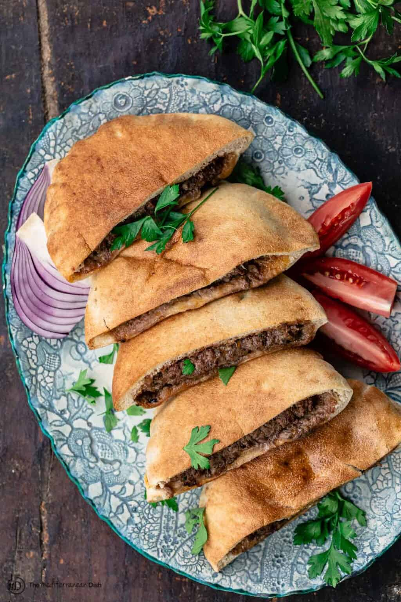

Hawawshi is a popular Egyptian street food, particularly in Cairo and Alexandria (where they call it baladi). It is basically dough (or pita) stuffed with a mixture of ground beef that is seasoned with tantalizing warm spices, onions, garlic, hot peppers and fresh herbs.
Legend has it that one butcher by the name of Ahmed Al-Hawash in Cairo's Tawfeek Souq came up with this sandwich back in the early 1970s and gave it his name. The idea has traveled throughout parts of Africa and the Middle East (in Lebanon, another version of this sandwich is called Arayes).
In Egypt, hawawshi pitas are typically made to order so they're fresh out of the oven when you get them. When local Egyptian restaurants, particularly in Cairo or Alexandria, make it, they start by making a special dough (similar to the dough used for pita bread) and then they wrap the dough around the meat mixture and cook it in their large ovens (some use clay ovens or pizza ovens). In this shortcut version, I skip making the dough and use ready pita pockets, which become nice and crispy when heated. No special equipment is needed but a large sheet pan or two and your oven.